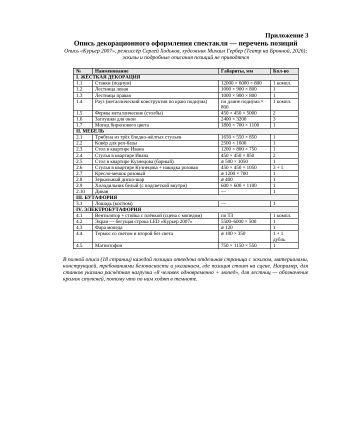
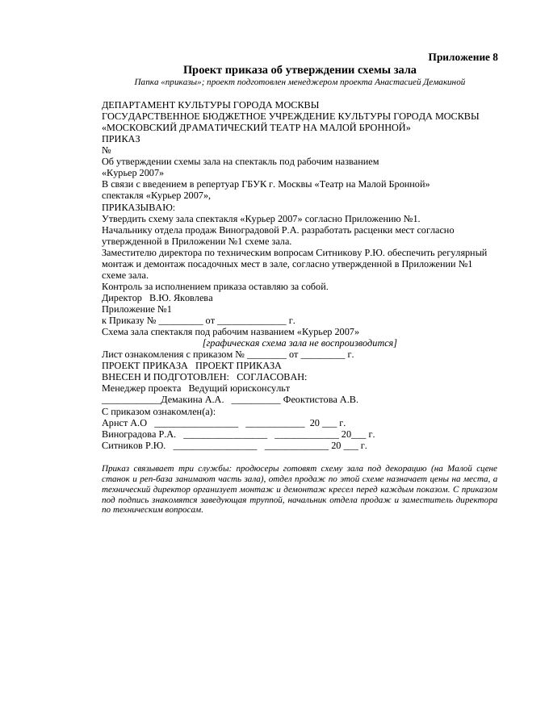
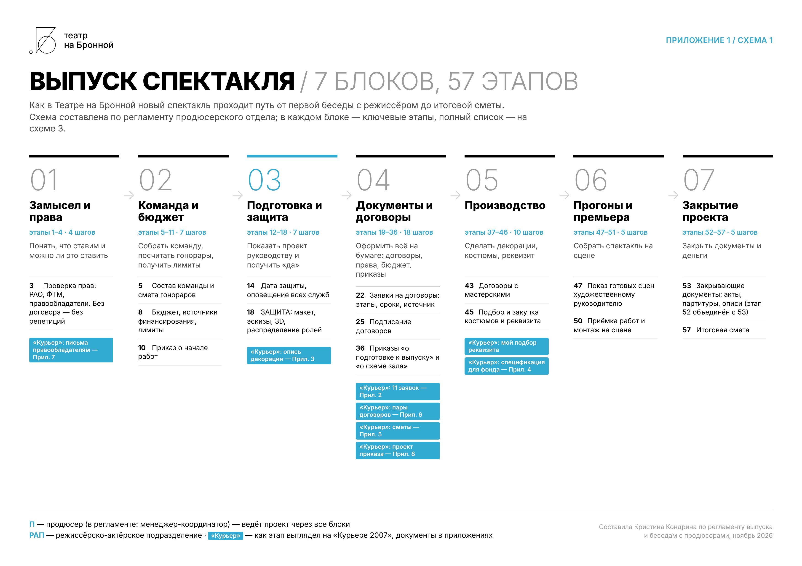
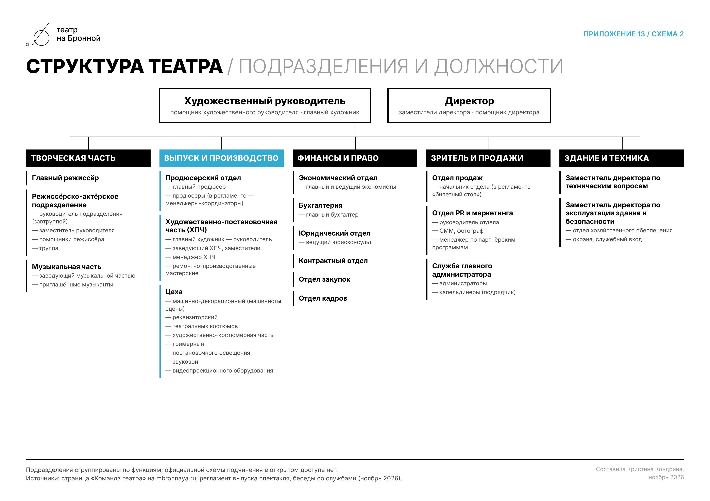
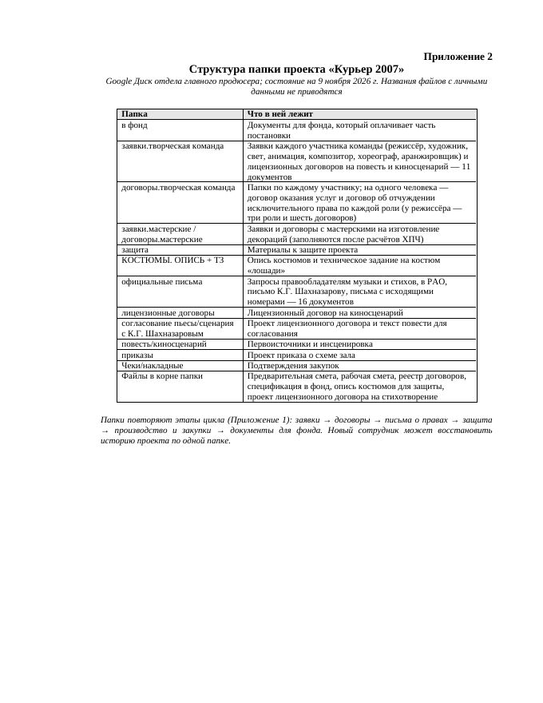
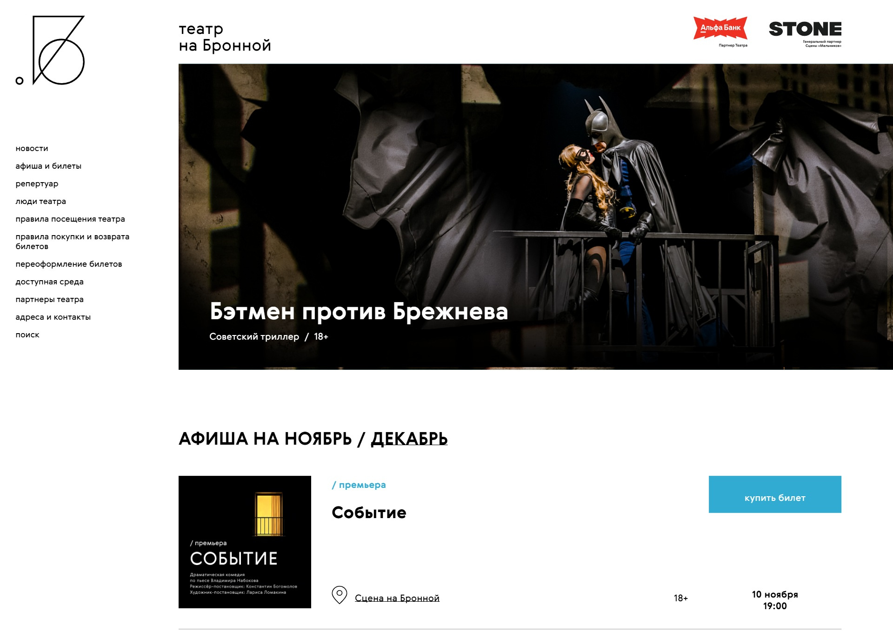
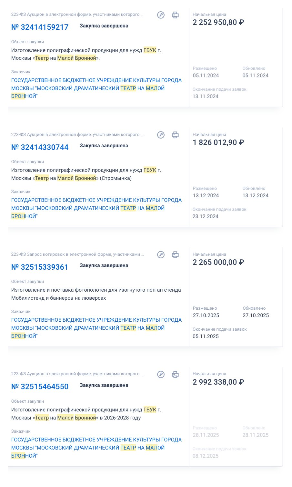

театр
на Бронной
на Бронной
02 / КЕЙС «КУРЬЕР 2007»
«Курьер 2007» / вживую
- Права: письма Карену Шахназарову и в РАО · Прил. 7
- Команда: 11 заявок на договоры · Прил. 2
- Защита: опись декорации · Прил. 3
- Бюджет: предварительная и рабочая сметы · Прил. 5
- Договоры: пары договоров с режиссёром · Прил. 6
- Производство: встреча с мастерской о зеркальном панно и лестнице
- Зал: проект приказа о схеме зала · Прил. 8
Суммы и личные данные в документах закрыты

Письма · Прил. 7

Смета · Прил. 5

Договор · Прил. 6

Опись · Прил. 3

Приказ · Прил. 8
9
театр
на Бронной
на Бронной
02 / ЧТО СДЕЛАЛА Я
Моя работа
01
Спецификация для фонда
Костюмы и реквизит по описи · Прил. 4
332
ссылки на реквизит
Подбор по описи художника Михаила Гербера, проверка каждой
13,8%
сверка текста
Столько в пьесе заимствовано из повести и фильма
03
схемы театра и выпуска
Структура и 57 этапов · Прил. 1, 13
10
идей партнёрств
Для отдела PR и маркетинга

Спецификация



Папка проекта
10
театр
на Бронной
на Бронной
03 / РЕПЕРТУАР, ПИАР И ЗРИТЕЛЬ
Пиар и зритель
Репертуар
Названия выбирает художественный руководитель, план сезона объявляют на закрытии
Продажи
Плана продаж нет, цены динамические, отчёты каждый день
Маркетинг
Брендбук 2022 года устарел, новая концепция «Театр крупным планом»
Закупки
На продвижение театр сам закупает в основном печать: полиграфию и баннеры
Зритель
Отзывы через QR-код у гардероба; по жалобам ставят новые кресла
Слабые показы
Продажи и маркетинг поддерживают их вместе

Сайт театра · Прил. 12

Telegram

Закупки · Прил. 11
12